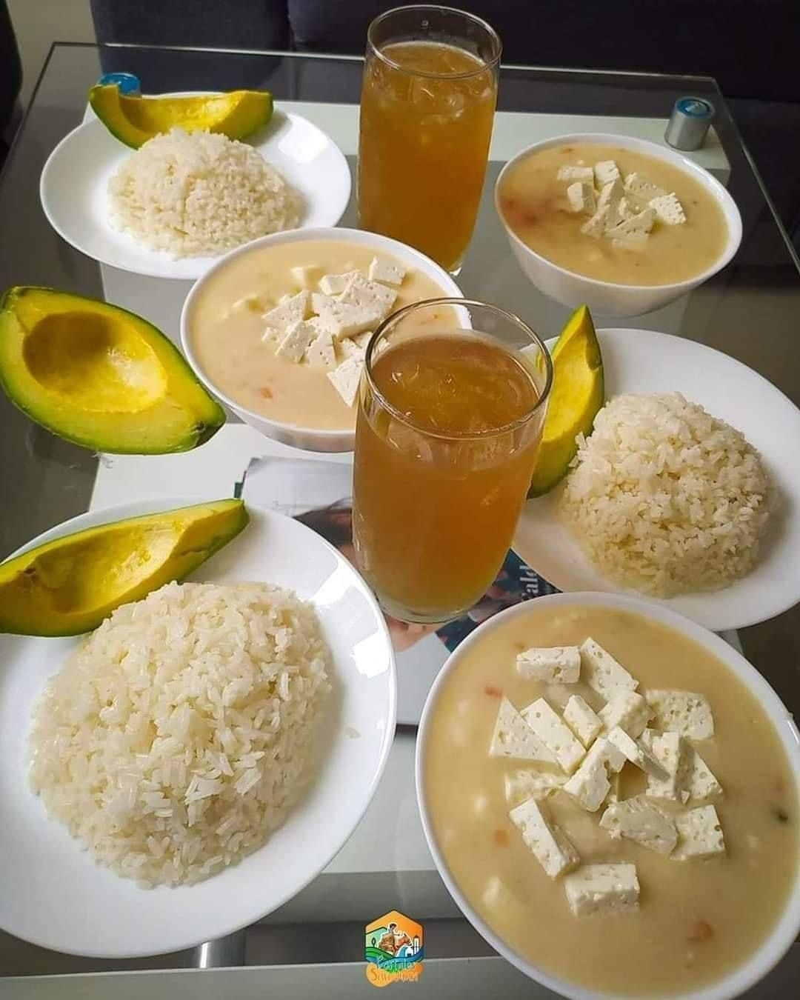
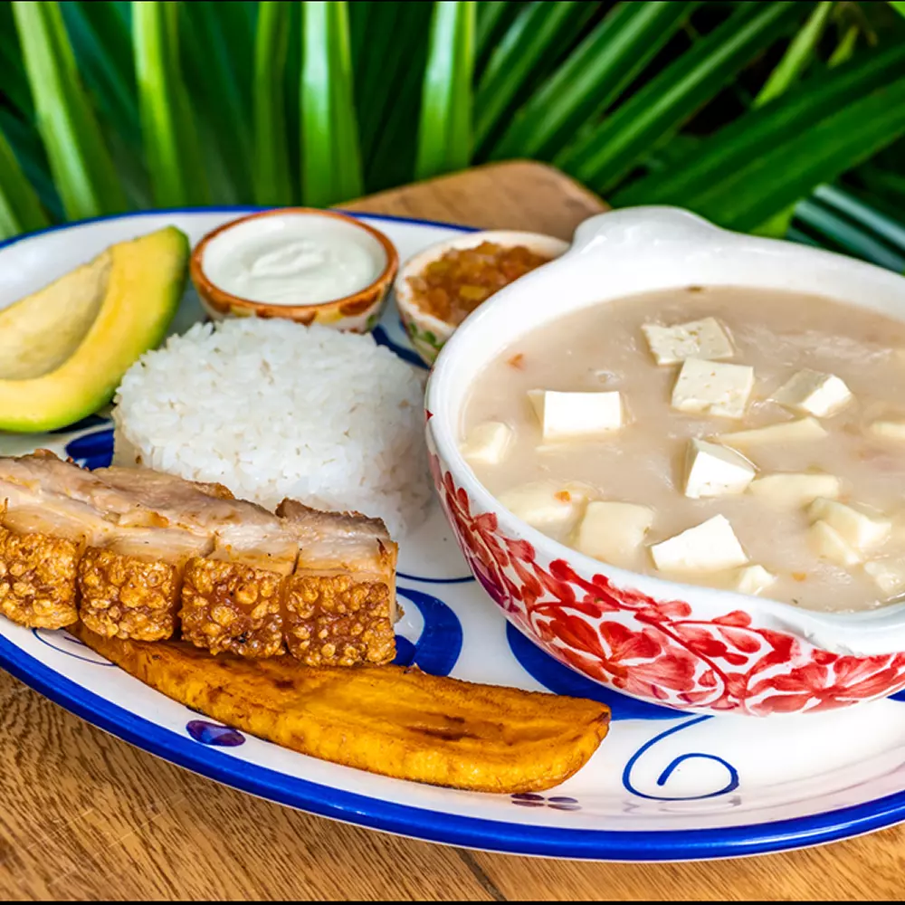
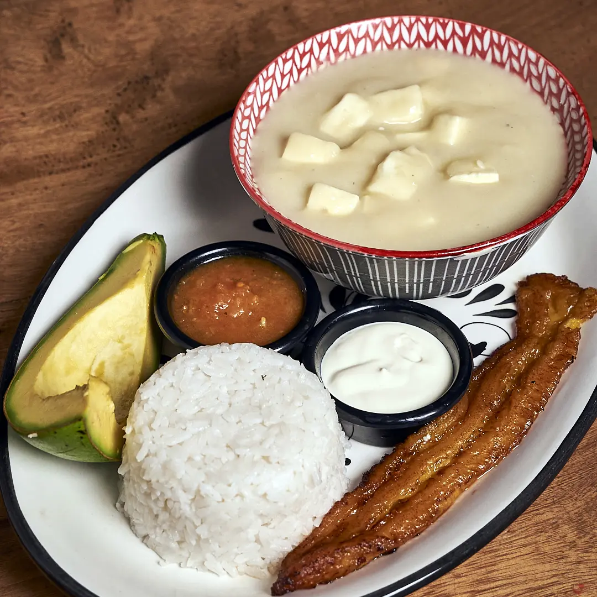

Mote de Queso (Cheese Soup)
Mote de queso is one of Tierralta’s most representative dishes. It’s a thick soup made
with yam and cubed cheese, seasoned with ingredients like onion, garlic, and lime.
Depending on the preparation, it may include cilantro, tomato, scallions, or whey, which
gives it an even more distinctive flavor. This dish is often served with chicharron
(fried pork rinds), avocado, patacones (fried plantains), or slices of plantain.


